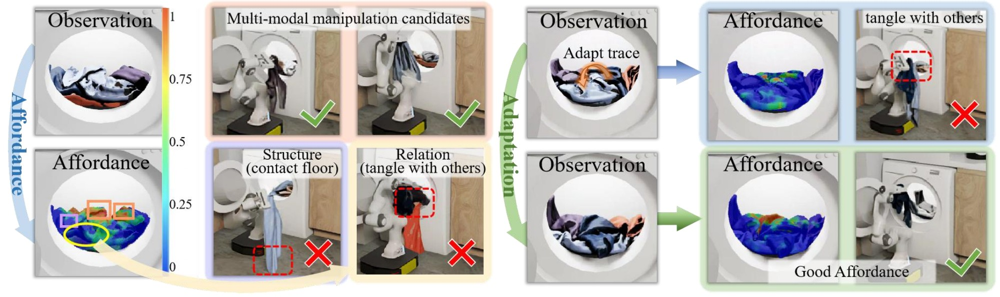
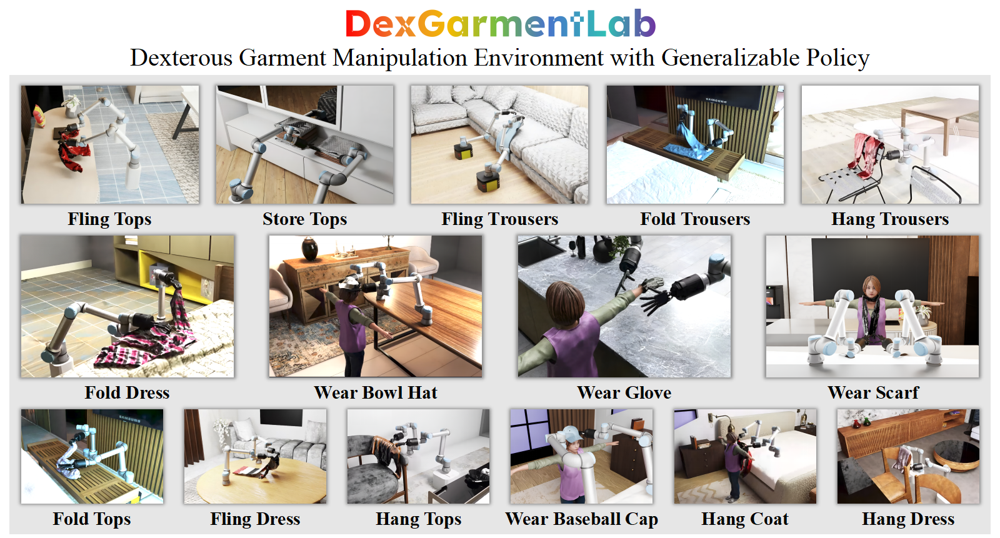
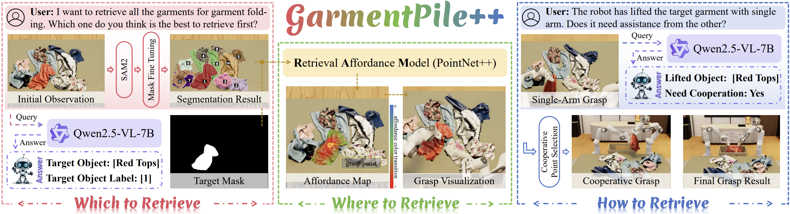
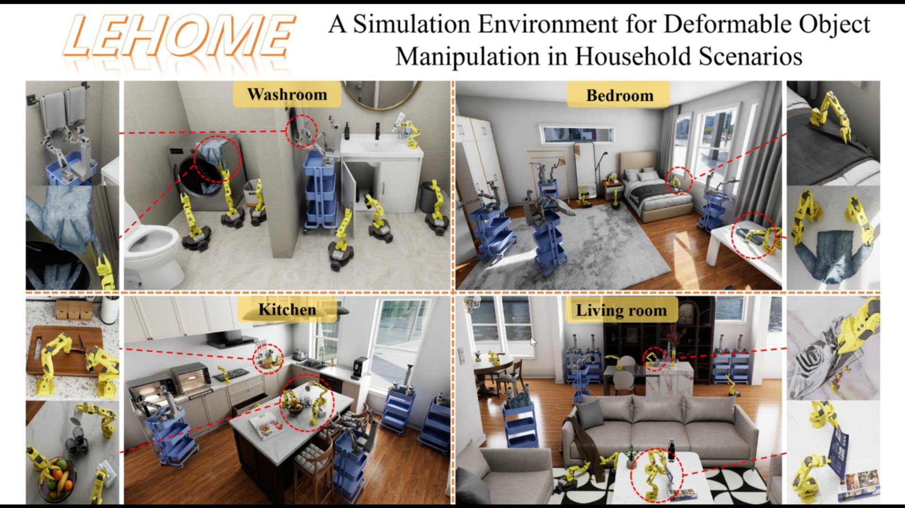

柔性物体仿真与操作
这里是你实验室或个人研究工作的总体介绍。点击下方的名片可以查看每篇论文的详细实现细节、实验结果与图表展示。
UniGarmentManip
A Unified Framework for Category-Level Garment Manipulation via Dense Visual Correspondence
该工作提出了跨衣物的通用表征，可以指导多样的柔性衣物，如裤子、裙子、上衣的操作，如叠、挂、摊平。
Video Demos
Fling
Fold
Hang
GarmentPile
Point-Level Visual Affordance Guided Retrieval and Adaptation for Cluttered Garments Manipulation
该工作提出了一个杂乱衣物堆操作框架，可以依次检取堆叠的所有衣物，并在保持衣物干净（不触地）的同时确保操作稳定性。
框架核心采用点级可供性学习，为每个点预测其可操作性分数。该表示能够感知衣物的几何特征（如边缘位置可能导致其他部分触地）、局部结构（如褶皱区域）以及物体间关系（如抓取时是否会牵连缠绕的衣物）。
针对高度缠绕场景，框架引入适应模块。当可供性评估发现没有合适操作点时，模块会自动执行挑放动作重组场景，使衣物进入更易操作的构型。整个流程循环执行直到所有衣物被成功取出。

Simulation Video
Washing Machine Simulation Video
Real-World Video
Washing Machine Real-World Video
Basket Real-World Video
Sofa Real-World Video
DexGarmentLab
Dexterous Garment Manipulation Environment with Generalizable Policy
该工作提出灵巧（以双手协同为主）衣物操作的完整解决方案，含仿真环境、自动化数据采集、泛化策略三大核心模块，可完成 15 类衣物操作任务，且能泛化到未见过的衣物形状与变形状态。
方案核心为 DexGarmentLab 仿真环境、自动化数据采集管道和层级化衣物操作策略（HALO）：DexGarmentLab 基于 Isaac Sim 构建，集成 2500 + 件 8 类衣物，结合 PBD/FEM 仿真与物理参数优化，实现衣物与灵巧手的真实交互；数据采集管道依托衣物类别级结构一致性，通过衣物可供性模型（GAM），仅需单次专家演示即可自动生成多样化数据；HALO 分两阶段实现泛化，先由 GAM 定位衣物操作区域，再通过结构感知扩散策略（SADP）生成适配衣物和场景的操作轨迹。
该方案借助类别级结构对应性解决衣物操作点难定位问题，GAM 精准匹配不同变形衣物的操作点，SADP 动态调整轨迹适配各类场景。实验证明，其在各类衣物操作任务上的成功率显著优于主流基线方法，且少量真实数据即可实现高效的仿真到现实迁移。

Simulation Video
Fling Tops
Store Tops
Fling Trousers
Fold Trousers
Hang Trousers
Fold Dress
Wear Bowl Hat
Wear Glove
Wear Scarf
Fold Tops
Fling Dress
Hang Tops
Wear Baseball Cap
Hang Coat
Hang Dress
Real-World Video
Fold Tops 1
Fold Tops 2
Fold Tops 3
Hang Tops 1
Hang Tops 2
Hang Tops 3
Wear Bowl Hat 1
Wear Bowl Hat 2
Wear Bowl Hat 3
Wear Scarf 1
Wear Scarf 2
Wear Scarf 3
GarmentPile++
Affordance-Driven Cluttered Garments Retrieval with Vision-Language Reasoning
该工作提出了一个衣物检取管线，可以安全高效地从杂乱衣物堆中检取衣物。该管线既能依次检取所有衣物，也能根据语言指令取回指定衣物，并保证每次恰好取出一件，为折叠、悬挂等下游任务奠定基础。
管线核心采用视觉语言模型（VLM）进行高层推理与规划，结合 SAM2 分割模型为衣物堆生成掩码，为 VLM 提供清晰的视觉线索。当初始分割质量不佳时，VLM 会触发掩码优化流程：通过机械臂轻微挑起衣物并录像，利用 SAM2 的视频追踪功能生成更精准的掩码。
在抓取执行层面，管线引入点云可供性模型预测最优抓取点，显著提升单臂检取成功率。对于大件衣物或因抓取位置不当导致的严重下垂，VLM 会自动启动双臂协作，确保检取过程安全高效。此外，管线具备自动监督机制：一旦检测到同时抓起多件衣物，会立即中止并重新执行检取。

Simulation Video
Close Retrieve Cyan Tops
Close Retrieve Glove
Close Retrieve Sequentially 1
Close Retrieve Sequentially 2
Open Retrieve Red Pants
Open Retrieve Sequentially 1
Open Retrieve Sequentially 2
Open Retrieve Striped Dress
Real-World Video
Close Retrieve Garments Sequentially
Close Retrieve Hat
Open Retrieve Garments Sequentially
Open Retrieve Glove
Sparse Meets Dense
Correspondence Guided Robotic Manipulation with Rigid-Deformable Interactions
该工作提出面向刚柔交互机器人操作的稀疏-稠密混合对应关系表示框架，仅需少量演示即可泛化到新形状、新形变的刚柔交互场景，解决了此类任务中交互信息捕捉与关键点跟踪的核心难题。
框架核心融合结构与交互感知的稀疏关键点对应和可变形体稠密对应：稀疏关键点从刚、柔物体全局结构中提取，结合二者交互位姿与局部接触筛选，编码位姿、方向等任务约束；稠密对应将预训练 2D 稠密特征迁移至 3D 空间，为稀疏关键点锚定特征，实现变形过程中关键点的精准实时跟踪。
框架先通过 VLM 将复杂任务分解为辅助与交互阶段，再基于稀疏关键点构建位置+方向约束，将操作序列生成转化为闭式约束优化问题，通过最小化约束与碰撞损失求解机器人末端执行器最优位姿；同时利用稠密对应，将演示的稀疏关键点映射到新的刚柔物体对，生成新约束并优化操作序列，实现跨形状、形变、位姿的泛化。
该框架在插衣架入衬衫、球拍装包等 4 类典型刚柔交互任务中验证，仿真和真实场景成功率均显著优于纯稀疏、纯稠密表示的基线方法；消融实验也证实，稀疏关键点、稠密对应及位置/方向约束对操作效果均不可或缺。
Hang Tops
Put Racket into Bag Type 1
Put Racket into Bag Type 2
Put Racket into Bag Type 3
Dexknot
Generalizable Visuomotor Policy Learning for Dexterous Bag-Knotting Manipulation
该工作提出了柔性袋子的通用表征，可以指导商超等场景中多样化的袋子打结任务。
Video Demos
Bag1 Front-View
Bag1 Top-View
Bag2 Front-View
Bag2 Top-View
Bag3 Front-View
Bag3 Top-View
Lehome
A Simulation Environment for Deformable Object Manipulation in Household Scenarios
该工作提出了面向家庭场景可变形物体操作的仿真环境LeHome，覆盖多类家庭场景与全类型可变形物体，实现高保真的物理仿真与交互，同时支持多款机器人硬件（含低成本机型），为家庭机器人研究提供了可扩展的测试平台，有效缩小了仿真到现实的落地差距。
LeHome 核心依托多类型高保真资产、精细化物理仿真体系和Action Graph 动作逻辑机制实现高真实度模拟：资产层面涵盖等离子体、颗粒、线性物体、薄壳、体积物体、流体 6 大类可变形物体，适配卧室、厨房等全家庭场景；仿真层面针对不同物体特性，分别采用 PBD、FEM、动态网格法实现精准的力学行为模拟；Action Graph 则通过节点化的事件响应逻辑，精准建模操作的因果关系，实现如切香肠等精细的物体形态与状态转换。
针对家庭机器人的落地需求，环境特别支持LeRobot 系列低成本机器人，并搭建了键盘、游戏手柄、主从跟随系统多模态遥操作框架，兼顾数据采集的易访问性与高保真度；同时引入领域随机化策略，对物体位置、光照、材质等维度进行随机扰动，还通过轨迹重放扩充数据集，大幅提升训练策略的鲁棒性。
为验证环境有效性，在折叠衣物、制作汉堡、切香肠等 6 类典型家庭任务中开展仿真与真实实验，支持模仿学习、视觉语言动作等主流算法训练；实验表明，基于 LeHome 仿真数据预训练再结合少量真实数据微调的策略，在真实场景中的操作成功率远高于仅用真实数据训练的策略，充分证明了该环境的实用性与泛化能力。
